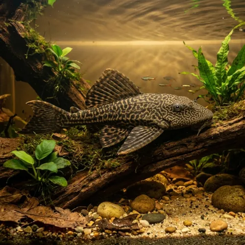

Nome popular principal
Cascudo Abacaxi
Cascudo Abacaxi, Cascudo-Leopardo, Cascudo-Comum, Amazon Sailfin Catfish
Ficha de peixe
Cascudos e Limpa-Fundos
Um impressionante cascudo amazônico de grande porte, ideal para aquários amplos onde desempenha papel fundamental no consumo de algas e restos alimentares.

Nome popular principal
Cascudo Abacaxi, Cascudo-Leopardo, Cascudo-Comum, Amazon Sailfin Catfish
Nome científico
Nome técnico essencial para taxonomia, cruzamento de manejo e referência editorial consistente.
Dificuldade de manejo
Use este nível como referência inicial, sempre considerando volume, estabilidade e compatibilidade do aquário.
Seção 1
Seção 2
Seções 4 a 6
Cascudo Abacaxi tem hábito alimentar onívoro. Excelente. 1 vez ao dia (preferencialmente à noite). Alimenta-se de algas, rações afundantes de spirulina e aceita com entusiasmo vegetais frescos fatiados, como abobrinha, pepino e chuchu.
Muito difícil de identificar visualmente; machos adultos apresentam a papila genital ligeiramente mais proeminente. Tipo de reprodução: Ovíparo. Dificuldade de reprodução: Avançado. Na natureza, escava longas galerias em barrancos lamacentos para a postura dos ovos, tornando a reprodução em aquários domésticos muito rara.
Média. Substrato recomendado: Areia fina de rio ou cascalho rolado com troncos e pedras grandes. Necessidade de esconderijos: Alta. A presença de troncos é indispensável no aquário, pois a raspagem de fibras de madeira (lignina) auxilia no seu processo digestivo.
Seção 7
Possui uma das maiores expectativas de vida entre os peixes tropicais e produz bastante carga orgânica quando adulto, exigindo boa filtragem.
Seção 8
Em aquários adequados e bem alimentado, pode atingir entre 30 e 50 cm de comprimento na fase adulta.
Os troncos fornecem fibras de madeira (lignina) fundamentais para o bom funcionamento do trato digestivo da espécie.
Sim, é um peixe solitário e territorialista com outros cascudos de grande porte, vivendo perfeitamente sozinho.